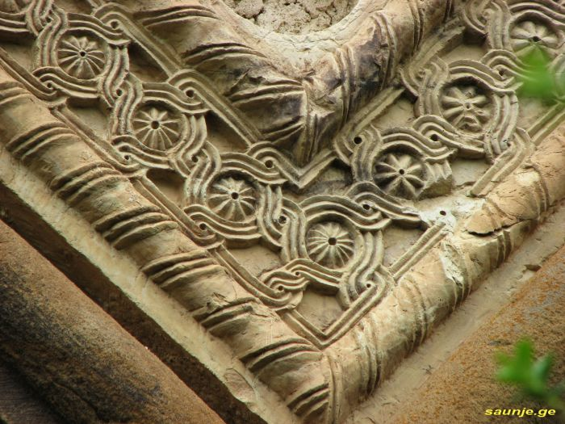
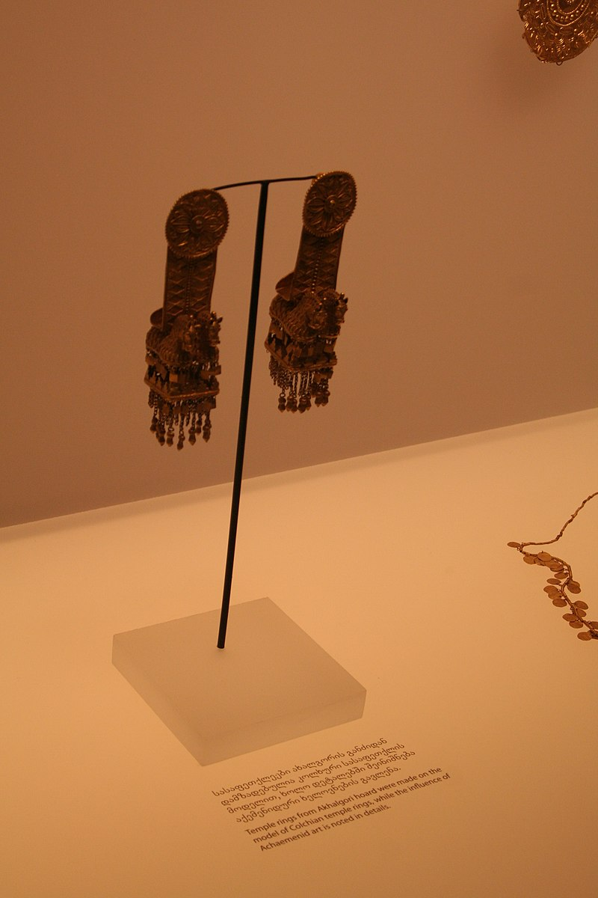
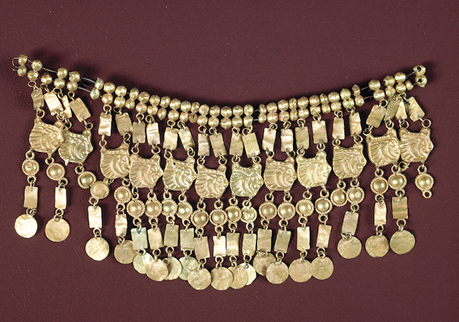

დაგვიმეგობრდი და მიიღე უსაზღვრო ინფორმაცია
ქარჩოხის ციხე, ცხმორის ციხე — შუა საუკუნეების ციხესიმაგრე აღმოსავლეთ საქართველოში, მდინარე ქსნის ზემოთში, კლდოვან კონცხზე, იქ, სადაც ოხირისხევი მდ. ქსანს უერთდება (ახლანდელი ახალგორის მუნიციპალიტეტის ტერიტორიაზე). აქ უძველესი დროიდან გადადიოდა გზები მთიულეთიდან ქსნის ხეობაში, რამაც განაპირობა ციხესიმაგრის დაარსება. XIV საუკუნის დასაწყისში მეფე დავით VIII-მ შალვა ქსნის ერისთავის წინააღმდეგ ლაშქრობის დროს სცადა ქარჩოხის ციხის აღება, მაგრამ უშედეგოდ. ვახუშტი ბაგრატიონის (XVIII ს.) მიხედვით, ქარჩოხის ციხე XVII საუკუნის I ნახევარში მოქმედი სიმაგრე იყო. XVIII საუკუნის დასასრულს ქსნის საერისთავოს გაუქმების შემდეგ, ქარჩოხის ხეობა თავისი ციხითურთ მეფე ერეკლე II-ის ერთ-ერთ შვილს - იულონს გადაეცა. ქარჩოხის ციხის კომპლექსში თავდაპირველია ადრინდელი შუა საუკუნის ზურგიანი კოშკი და უაფსიდო ბაზილიკური ეკლესია, შემდეგი პერიოდისა - გალავანი და რეკონსტრუირებული კოშკი.
ლარგვისის მონასტერი — სამონასტრო კომპლექსი საქართველოში, ახალგორის მუნიციპალიტეტში, სოფელ ლარგვისის მახლობლად, მდინარეების ქსნისა და ჭურთის შესართავთან. ვინაიდან მონასტერი ორი მდინარის შესართავთან იყო გაშენებული და წყალდიდობა დიდ ზიანს აყენებდა, შემდგომში ქსნის ერისთავებმა სამონასტრო ნაგებობები მთის ფერდობზე განათავსეს. მონასტრის ადრეული ნაგებობებიდან მცირედიღაა შემორჩენილი.
ლარგვისის მონასტერს პირველად „ძეგლი ერისთავთა“ იხსენიებს. მის მიხედვით ლარგვისის მონასტერი იუსტინიანე კეისრის (527–565) მიერ პირველ ერისთავად განწესებული როსტომის დროს უკვე მოქმედებდა. თუმცა ეს ცნობა სხვა წყაროებით არ დასტურდება.[1] ლარგვისის ხუროთმოძღვრული ანსამბლის შესახებ უფრო ზუსტი და მეტი ცნობები მოგვეპოვება XIV საუკუნიდან, მასალები ცხადყოფენ, რომ ლარგვისი ქსნის ერისთავების განსაკუთრებული მზრუნველობის საგანი იყო, როგორც მათი თავდაპირველი სალოცავი და სამარხი.[2] XIII საუკუნეში წყალდიდობის შედეგად რამდენიმეჯერ დანგრეული მონასტერი აღადგინეს, მაგრამ 1400 წელს თემურლენგის მეექვსე ლაშქრობის დროს ტაძარი განადგურდა. მაგრამ გრიგოლ ბანდაისძის წინამძღოლობით კვლავ აღსდგა. მაგრამ ტაძარი უგუმბათო იყო. ამჟამინდელი ლარგვისის მონასტრის ეკლესიის აგების შესახებ ცნობას გვაწვდის ღვთისმშობლის ხატის ასომთავრული წარწერა, სადაც გრძელი შესავლის შემდეგ იკითხებოდა:
ლარგვისის სამონასტრო ანსამბლი შემდეგი ობიექტებისაგან შედგება. კოშკებიანი ციხე-გალავანი, საცხოვრებელი ნაგებობანი, გუმბათოვანი ეკლესია და ცალკე მდგარი კოშკი. ამათგან ყველაზე უკეთაა შენახული გუმბათოვანი ტაძარი, ყველაზე ცუდად — ცალკე მდგარი კოშკი.
ლომისა — უძველესი სალოცავი, წმინდა გიორგის სახელობის ეკლესია და სამონასტრო კომპლექსი, ქართული ხუროთმოძღვრების ძეგლი დუშეთის მუნიციპალიტეტის სოფელ ზემო მლეთის სამხრეთით, 6-7 კილომეტრზე, მდინარეების ქსნისა და არგვის წყალგამყოფი ქედის უღელტეხილზე (ახალგორის მუნიციპალიტეტი). განეკუთვნება IX-X საუკუნეებს. სახელწოდება, ტრადიციის თანახმად, ლომახარს უკავშირებენ. ვარაუდით თავდაპირველად ლომისა მთვარის საკულტო ტაძარი ყოფილა. ქრისტიანული ეკლესია აუგიათ წარმართული ტაძრის ადგილზე. ლომისა იყო მთიულეთისა და ქსნის ხეობის მოსახლეობის უპირველესი სალოცავი. აქვე წყდებოდა ბევრი ეკონომიკური, პოლიტიკური და სამხედრო საკითხი.ნაგებობა გეგმით მარტივი სამეკლესიიანი ბაზილიკაა (14,5X7,8მ). განეკუთვნება IX-X საუკუნეებს. ნაგებია ნატეხი ქვით. ამჟამად ნახევრად მიწაში და ნანგრევებშია ჩამჯდარი.
წირქოლი, იგივე წირქვალი – VIII საუკუნის ღვთისმშობლის სახელობის ეკლესია შიდა ქართლში (ქსნის ხეობა), დაბა ახალგორის ჩრდილოეთით მდებარე სოფელ წირქოლში, მდ. ქსნის მარჯვენა ნაპირზე[1]. მიეკუთვნება გარდამავალ ხანას (VII - X სს.). ეკლესიის აგების ზუსტი თარიღი ცნობილი არ არის. თუმცა მისი ხუროთმოძღვრების და მორთულობის მიხედვით თუ ვიმსჯელებთ, ის VIII საუკუნეშია აშენებული. ასევე, არ შემორჩენილა ცნობები ეკლესიის ამგებზე. წირქოლის ეკლესია ნიქოზისა და ცხინვალის ეპარქიის დაქვემდებარებაშია. ამჟამად ახალგორის მუნიციპალიტეტის ტერიტორიას და მათ შორის სოფელ წირქოლსაც, რუსი ოკუპანტები აკონტროლებენ.
წირქოლის ეკლესია VII-X საუკუნის გარდამავალი პერიოდის სხვა ძეგლებთან შედარებით უჩვეულო არქიტექტურა აქვს. გეგმაში წაგრძელებული სწორკუთხედის შენობას გარედან მარტივი მასები აქვს და ერთი შეხედვით ერთ ნავიან სამლოცველოს ჰგავს. შიდა კონსტრუქცია ბევრად უფრო რთულია: ინტერიერში ცენტრალურ კვადრატულ სივრცეს აგვირგვინებს უყელო სფერული გუმბათი, რომელიც ტრომპების საშუალებით პირდაპირ აზის კვადრატულ საფუძველს და გარედან არ არის გამოვლენილი. დასავლეთ ნაწილი ორ სართულიანია და გუმბათქვეშა სივრცეს თაღოვანი მალებით უკავშირდება. გუმბათის ასეთი გადაწყვეტა უჩვეულოა ქართული ხუროთმოძღვრებისთვის. ინტერიერის აღმოსავლეთ ნაწილი ეთმობა საკურთხეველს, ნახევარწრიული აფსიდით და გვერდითა ოთახებით. მიუხედავად იმისა რომ, წირქოლის ეკლესიის არქიტექტურაში გარე მასების და შიდა სივრცის შესაბამისობა დარღვეულია, შენობის მშვენიერი პროპორციები, და ფასადების სისადავე ტაძრის ხუროთმოღვრის უდავო ნიჭს მოწმობს.
წირქოლის ეკლესიაში ღვთისმშობლობას იმართებოდა ხატობა, რომელსაც ესწრებოდნენ მომლოცველები ახლომახლო სოფლებიდან. ეკლესიის გვერდით არის სასაფლაო. საფლავის ქვებზე გამოსახულია ადამიანები ძველ ქართულ ტანისამოსში. ეკლესიის მახლობლად ასევე დგას ციხე, რომელიც პირველად X საუკუნეში განვითარებულ მოვლენებთან დაკავშირებით იხსენიება ქართულ ისტორიულ წყაროებში.
ყელის ტბა — ვულკანურ-მყინვარული გენეზისის[1] ტბა საქართველოში, ახალგორის მუნიციპალიტეტში.[2] მდებარეობს ყელის ვულკანურ ზეგანზე, ზღვის დონიდან 2914 მ სიმაღლეზე. სარკის ფართობი 1,28 კმ², საშუალო სიღრმე 24,7 მ, მაქსიმალური სიღრმე 63 მ, წყლის მოცულობა 31,6 მლნ მ³. წყალშემკრები აუზის ფართობი 7,8 კმ². მერიდიანულად გადაჭიმული ტბის ქვაბული შექმნილია დიდი მყინვარული ცირკის ლავური ნაკადის შეგუბებით, რომელიც შემდეგში მყინვარმა გადაამუშავა. უკავია ორი ქვაბული. ტბა საზრდოობს წვიმის, თოვლისა და მიწისქვეშა წყლით. მაქსიმალური დონე ივნისშია, მინიმალური — თებერვალში. ტბიდან გამოედინება მდინარე ქსანი.[3] ტბა 7–8 თვე ყინულითაა დაფარული. წყალი მტკნარია. თევზი არ არის.[4] ტბა და მისი მიდამოები პერსპექტიულია ტურიზმისათვის.
ხოფას მონასტერი მცხეთა-მთიანეთის მხარეში, ახალგორის მუნიციპალიტეტში, სოფელ მოსაბრუნის მახლობლად მდებარეობს, ქსნის ხეობაში. ეს ტერიტორია დღესდღეობით ოკუპირებულია და ცხინვალის რეგიონის ფარგლებშია მოქცეული. იგი XIII საუკუნით თარიღდება. კომპლექსი მოიცავს იოანე ნათლისმცემლის ეკლესიას, სამრეკლოს, სატრაპეზოსა და სხვა ნაგებობათა ნაშთებს. სამონასტრო ანსამბლის მთავარი ნაგებობა იოანე ნათლისმცემლის სახელობის ეკლესიაა. იგი დარბაზულ ნაგებობას წარმოადგენს ჩრდილოეთის მინაშენითა და სამხრეთისა და დასავლეთის კარიბჭეებით. სამხრეთ კარიბჭეზე დაშენებულია სამრეკლო. დარბაზი აღმოსავლეთით ნახევარწრიული აფსიდით სრულდება და გადახურულია ოდნავ შეისრული კამარით. კამარა შეკიდულ საბჯენ თაღებს ეყრდნობა. გრძივი კედლები პილასტრებზე გადაყვანილი თაღედითაა დანაწევრებული. საკურთხეველი დარბაზისგან კანკელითაა გამოყოფილი. ინტერიერი მთლიანად შელესილი და მოხატული იყო, რომლისგანაც მხოლოდ მცირე ფრაგმენტებია შემორჩენილი. ტაძარი უხვადაა შემკული ჩუქურთმით, განსაკუთრებით მდიდრულადაა მორთული დასავლეთ ფასადი. კარიბჭის თაღოვანი შესასვლელი და მის ორივე მხარეს დატანებული თითო ნიში სამთაღიანი კომპოზიციითაა გაერთიანებული. ნიშები ფესტონებითაა შემკული. კარიბჭის ცენტრალური ნაწილი მთლიანად მოჩუქურთმებული ვარსკვლავისებური კამარითაა გადახურული. ტაძრის დასავლეთ ფასადზე, შესასვლელის ზევით, სარკმელია ჩუქურთმიანი მოჩარჩოებით, სარკმლის ზევით კი კოპი და ბოლნური ჯვრის რელიეფია მოთავსებული. მოჩუქურთმებულია შესასვლელების საპირეებიც. ეკლესიის ფასადები მოპერანგებულია მოყვითალო-ოქროსფერი თლილი ქვით, შიგნით კედლები მსხვილი რიყის ქვითაა ნაგები, კონსტრუქციული ელემენტები კი გათლილი ქვითაა ამოყვანილი. ტაძრის ჩრდილო-დასავლეთით სწორკუთხა გეგმის მქონე, მოზრდილი, ბუხრიანი სატრაპეზო დგას. ნაგებობა აღმოსავლეთით დიდი ზომის, შვერილი სამლოცველო ნიშით სრულდება. სატრაპეზო ნაგებია რიყის ქვით, კონსტრუქციული ელემენტები გამოყვანილია უხეშად დამუშავებული ქვით. სამონასტრო კომპლექსში შემორჩენილია სხვა ნაგებობათა ნაშთებიც.
ქსნის არმაზის წმიდა გიორგის ეკლესია ისტორიული ქსნის ხეობაში, სოფელ არმაზის მახლობლად მდებარეობს. ქართული ხუროთმოძღვრების გარდამავალი ეპოქის (VII - X საუკუნის I ნახ.)ეს ღირშესანიშნავი ნიმუში აგებულია 864 წელს, ქსნის არმაზი, წირქოლის ეკლესიის მსგავსად, უჩვეულო კომპოზიციისაა. ძირითადი სივრცე გადახურულია ოთხ თავისუფლად მდგომ ბურჯზე დაყრდნობილი გუმბათით, რომელსაც ყელი არ აქვს და გარედან ორფერდა სახურავის ქვეშაა მოქცეული. ეკლესიის კედლები და კამარები ქვაყორისაა, კონქი თაღი, გუმბათი, ბურჯები და სხვა დეტალები კი შირიმისა. არმაზს ამშვენებს IX საუკუნის მოხატულობა, კანკელი და ლაპიდარული წარწერა. არმაზის ეკლესიის კულტურულ - საგანმანათლებლო საქმიანობის მაჩვენებელია ჩვენამდე მოღწეული ქსნის სახარება.
ყანჩაეთი (ყანჩავეთი) - სოფელი ახალგორის რაიონში, ხარულის ქედის სამხრეთ მთისწინეთში, მდინარე ყანჩაურისხევის (ქსნის მარჯვენა შენაკადი) ნაპირებზე. ზღვის დონიდან 1000 მ, ახალგორიდან 6 კმ-ში. სოფელში მდებარეობს შუასაუკუნოვანი ეკლესია (IX-XIII სს.) - ყანჩაეთის კაბენის ეკლესია, რომელიც მდიდარია ჩუქურთმებით და მოხატულობით. ეკლესია დაზიანებულია, 2008 წლამდე ნაწილობრივ რესტავრირებულია და ფრესკების ნაწილი ფრაგმენტების სახითაა შემორჩენილი. ამჟამად ეს ტერიტორია ოკუპირებულია.
კაბენის (ყანჩაეთის) მონასტერი (ახალგორის რ.), IX ს., ჟღერს ქვის ჰარმონია, ტ.14, გვ.119-121. გამ. "ციცინათელა", თბ., 2007 წ. კაბენის - ყანჩაეთის მონასტერი IX საუკუნის ქართული ხუროთმოძღვრების ძეგლი, მდებარეობს ახალგორის რაიონში სოფელ ყანჩაეთის მახლობლად (სოფელი ყანჩაეთი მდ.ქსნის მარჯვენა შენაკადის - მდ.ყანჩაურისხევის ნაპირებზეა, ახალგორიდან 6 კმ-ზე, ზღვის დონიდანნ 1000 მ-ზე.). ყანჩაეთის მონასტრის დიდი გუმბათოვანი ტაძარი XIII საუკუნეში საფუძვლიანად გადაუკეთებიათ. განირჩევა რამდენიმე სამშენებლო ფენა. თავდაპირველად "თავისუფალი ჯვრის" ტიპის გუმბათოვანი ნაგებობა ყოფილა. უძველეს ფენას მიეკუთვნება რვაწახნაგა ყელზე აღმართული გუმბათი, ნალისებრი ფორმის აფსიდი, 4 გუმბათქვეშა თაღი და საყრდენების ნაწილი. საშენ მასალად გამოყენებულია თეთრი, ნასვრეტებიანი ტუფი (კონსტრუქციულ ელემენტებში) და რიყის ქვა. კვადრატიდან წრეზე გადასვლა ხდება ტრომპებით. გუმბათსა და გუმბათის ყელზე შემორჩენილია მოხატულობის ფრაგმენტები, რომლებიც საღებავებით შესრულებული სამხრეთ ფასადის წარწერაში მოხსენიებულ პირთა მიხედვით, IX საუკუნის დამდეგს მიეკუთვნება.
ქსნის ერისთავის ციხე-დარბაზი — არქიტექტურული ძეგლი, რეზიდენცია ახალგორის მუნიციპალიტეტში, ახალგორში. აგებულია XVII საუკუნის პირველ ნახევარში. „ხოფას ჩრდილოთ არს მცირე ქალაქი ახალგორი. მსახლობელნი არიან სომეხნი, და სასახლე ქსნის ერისთავისა.“
თავდაპირველად საერისთავოს რეზიდენცია ქვენიფნევსა და ლარგვისში უნდა ყოფილიყო. მოგვიანებით კი, საერისთავოს გაძლიერებისა და გაფართოების პირობებში, მაღალ მთებში მომწყვდეული რეზიდენცია, ქსნის ერისთავებს აღარ შეეფერებოდა და ისინი ირჩევენ ახალ ადგილს ახალგორის სახით. ისტორიულ წყაროებში ახალგორი პირველად XVI საუკუნის 70-იან წლებში იხსენიება. მემატიანე ფარსადან გორგიჯანიძეს მოჰყავს ერთი საინტერესო ცნობა: „ირანის მიერ მეფედ წარმოგზავნილ როსტომს დიდხანს უწევდა წინააღმდეგობას დამოუკიდებელი საქართველოსათვის მებრძოლი თეიმურაზ პირველი. მას მხარს უჭერდნენ ქსნისა და არაგვის ერისთავები და ამილახორი. XVII საუკუნის 30-იანი წლების ბოლოს მოკავშირეები ჯარით ახალგორს შეკრებილან. როსტომმა გაიგო თუ არა ეს, სასწრაფოდ შეკრიბა ჯარი და ახალგორს ლოცვაზე მდგომ ერისთავებს მოულოდნელად დაესხა თავს.“
ერთ-ერთი მემატიანის ცნობით, 1721 წელს შანშე ქსნის ერისთავს უნებართვოდ დაუტოვებია თბილისი და თავის სამფლობელოში წასულა. მეფემ იცოდა, რომ ერისთავი უწინდებურად ახლაც განდგომაზე ფიქრობდა და დაუყოვნებლივ გაემგზავრა მის დასასჯელად. ერისთავის დამარცხების შემდეგ მეფის ჯარმა დაწვა ახალგორის სასახლე. ახალგორმა რეზიდენციის პერიოდი დაამთავრა საერისთავოს გაუქმებასთან ერთად — XVIII საუკუნის 70-იან წლებში. ახალგორში თითქმის ერთდროულად წარმოიქმნა ორი დიდი არქიტექტურული ანსამბლი. ოდნავ მოგვიანებით გაჩნდა კიდევ ერთი ანსამბლი, რომელიც პირველი ორისაგან მოშორებით დგას. მათ შორის ყველაზე დიდი აღმოსავლეთით მდგარი ციხე-დარბაზია. სიდიდით მეორეა მასთან ახლოს მდებარე ციხე-დარბაზი, ხოლო მესამე განაპირა შედარებით პატარაა.
2006 წლის 7 ნოემბერს, საქართველოს პრეზიდენტის ბრძანებულების თანახმად მიენიჭა ეროვნული მნიშვნელობის კულტურის უძრავი ძეგლის კატეგორია.
ახალგორის განძი — ადრინდელი ანტიკური ხანის არქეოლოგიური ძეგლი. აღმოჩნდა 1908 წელს ქსნის ხეობაში, სოფ. საძეგურთან (ახლანდელი ახალგორის მუნიციპალიტეტი). ნივთები შეაგროვა და ყოფილ კავკასიის მუზეუმისათვის შეიძინა ე. თაყაიშვილმა. ინახება აკადემიკოს ს. ჯანაშიას სახელობის საქართველოს სახელმწიფო მუზეუმში. ახალგორის განძში შემავალი ნივთები არის წარჩინებული ქალის მდიდრული სამარხეული მასალა (ცხენის აღკაზმულობის ნაწილები, ლითონის, ძვლის, მინისებრი პასტისა და ქვის სამკაული, ჭურჭელი, სარიტუალო ნივთები და სხვა).
ნივთების დიდი ნაწილი ადგილობრივი ნაწარმია და მოწმობს მხატვრული ხელოსნობის განვითარების მაღალ დონეს ძვ. წ. I ათასწლეულის შუახანებში. განძის ოქროს სამკაული (სასაფეთქლე საკიდები, საყურეები, გომბეშოების გამოსახულებიანი ყელსაბამი, რკალგახსნილი ბეჭდები, რომელთა ფარაკებზე ფანტასტიკური ცხოველებია გამოსახული) ადრინდელი ანტიკური ხანის ქართული ოქრომჭედლობის ბრწყინვალე ნიმუშია. ვერცხლის ნივთებიდან აღსანიშნავია იმდროინდელ კულტურის სამყაროში გავრცელებული ომფალოსიანი ფიალები.
ცხენის აღკაზმულობიდან - რახტის შესამკობი ოქროსა და ვერცხლის სხვადასხვანაირი ფირფიტები, ბრინჯაოს რგოლები და ლაგმები. ახალგორული ტიპის ლაგმები ჯერჯერობით მხოლოდ საქართველოშია აღმოჩენილი. ახალგორის განძის ოქროს ნივთებს აქემენიდური კულტურის გავლენის კვალი ემჩნევა. ბრინჯაოს ნივთებს ეს გავლენა არ ატყვია. განძი ძვ. წ. V-IV საუკუნეებით თარიღდება და მიუთითებს საქართველოს მოსახლეობის მკვეთრ ეკონომიკურ და სოციალურ დიფერენციაციაზე ძვ. წ. I ათასწლეულის შუახანებში.
